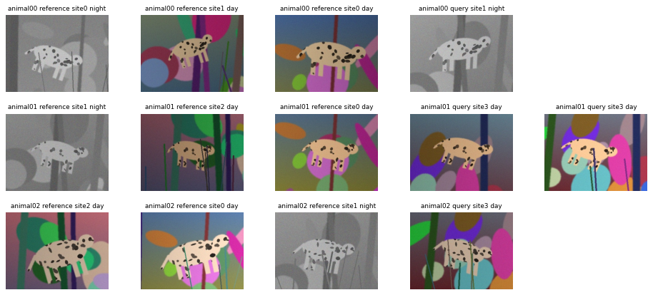
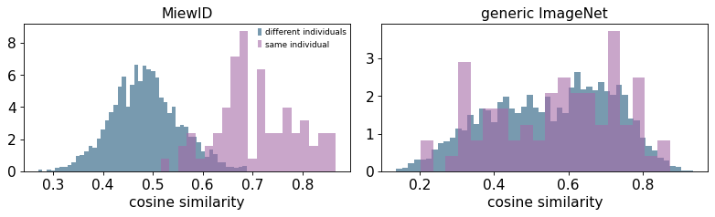
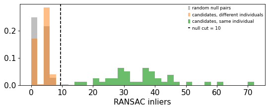
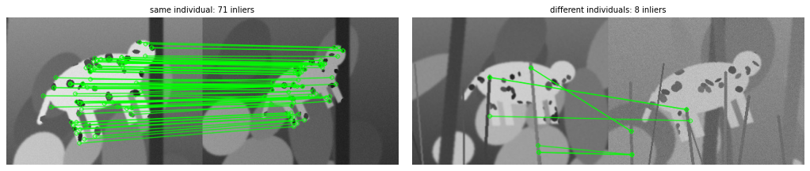
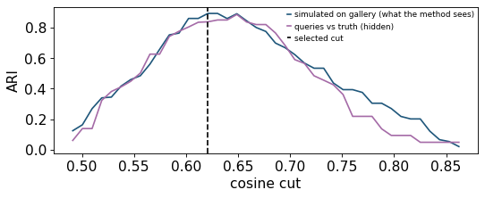

Open-set individual re-identification from photos (photo-ID)#
Camera traps and photo-ID surveys monitor animals that carry individual markings — spots, stripes, scars, scute or scale patterns. Two questions are asked of a batch of new photos (the queries):
Which known individual is this? Each query is compared with a labelled reference set (the gallery, a catalogue of animals identified in earlier seasons). This is closed-set matching.
How many individuals are there? Some queries show animals that are not in the catalogue. They must be grouped among themselves, without labels. This is open-set discovery, and the number of groups is the abundance estimate used in capture–recapture.
Both questions are answered by one partition of the query images: images with the same label are the same animal. The quality of that partition is measured with the adjusted Rand index (ARI; 1 = perfect, ≈0 = chance) and the relative abundance error \(|\hat K - K| / K\).
This tutorial uses ov.tl.reid_*, a toolbox for the whole chain:
Step |
Function |
What it does |
|---|---|---|
descriptor |
|
an animal re-ID network (MiewID, MegaDescriptor) or any timm / Hugging Face model, with its evaluation transform |
|
batched CPU embedding (optional flip / crop views, cache file), L2-normalised |
|
|
how well a similarity separates same-individual from different-individual pairs |
|
|
put several similarity matrices on one scale and average them |
|
|
remove the mean shift between viewpoints / camera modes |
|
|
reference-supervised linear metric (PCA + LDA), validated on held-out individuals |
|
verification |
|
top-k retrieval pairs from the global similarity |
|
SIFT/ORB keypoints + ratio test + RANSAC, with a random-pair null for the acceptance cut |
|
partition |
|
choose the clustering cut by simulation on the labelled reference |
|
attach queries to gallery identities, cluster the rest; every cut chosen from data |
|
all of it |
|
one call per image subset; each optional step kept only if it helps on held-out reference individuals |
Principle#
Global descriptor. A network maps image \(x_i\) to a unit vector \(f_i\); the similarity of two photos is the cosine \(s_{ij} = f_i^\top f_j\). Its usefulness for re-ID is the probability that a same-individual pair is more similar than a different-individual pair,
Generic (ImageNet) features describe the scene — species, pose, light, background — and give an AUC near 0.5 for individuals of one species. Re-ID backbones are trained to ignore those factors: MiewID (multi-species, trained on fine individual markings) and MegaDescriptor (Swin transformers trained on dozens of wildlife re-ID datasets).
Local geometric verification. A spot pattern is (nearly) planar, so two photos of the same flank are related by a homography \(H\). SIFT keypoints are matched by nearest descriptor and kept if the best match is clearly better than the second best (Lowe’s ratio test, \(d_1/d_2 < \rho\), \(\rho = 0.75\)); RANSAC then finds the \(H\) with the most inliers \(\lVert x'_m - H x_m \rVert < \varepsilon\). Different individuals produce only a handful of accidental inliers. Instead of a hand-chosen inlier count, the cut is calibrated on a null: the same matcher is run on random pairs (almost all of them different animals), and a candidate pair is accepted when
Only the top-k global neighbours of each query are verified, so the cost is \(O(nk)\) rather than \(O(n^2)\).
Viewpoint centring. If a camera mode (day colour vs night infra-red) shifts all embeddings of that mode, \(e' = e + \lambda(\mu - \mu_v)\) moves each mode’s mean \(\mu_v\) towards the global mean \(\mu\) (\(\lambda = 0.5\)).
Open-set partition. For query \(i\) and gallery individual \(c\) the identity score is the mean of the top-2 similarities to the images of \(c\). Queries (or whole query clusters) whose best score exceeds an attach cut \(a\) take that identity; the rest are clustered by average-linkage at a cluster cut \(t\); verified pairs are forced together (must-links). \(a\) and \(t\) are chosen by simulation on the reference: the labelled gallery is split into a pseudo-gallery and a pseudo-query set shaped like the real one (same size, half of the individuals unseen), and the cut maximising
is used for the real queries. Without a reference, accepted verified pairs act as pseudo-labels: half of them are forced together and the partition is scored by pairwise F1 on the other half.
import os
import time
import numpy as np
import pandas as pd
import matplotlib.pyplot as plt
import cv2
from sklearn.metrics import adjusted_rand_score, silhouette_score
import omicverse as ov
ov.plot_set(ipython_format='png')
T0 = time.time()
DATA = "reid_demo" # everything this notebook writes goes here
IMG = os.path.join(DATA, "images")
CACHE = os.path.join(DATA, "cache")
os.makedirs(CACHE, exist_ok=True)
🔬 Starting plot initialization...
🧬 Detecting GPU devices…
🚫 No GPU devices found (CUDA/MPS/ROCm/XPU)
____ _ _ __
/ __ \____ ___ (_)___| | / /__ _____________
/ / / / __ `__ \/ / ___/ | / / _ \/ ___/ ___/ _ \
/ /_/ / / / / / / / /__ | |/ / __/ / (__ ) __/
\____/_/ /_/ /_/_/\___/ |___/\___/_/ /____/\___/
🔖 Version: 2.3.2 📚 Tutorials: https://omicverse.readthedocs.io/
✅ plot_set complete.
1. A simulated population with known identities#
Real photo-ID sets cannot be redistributed freely here, and they rarely come with a complete truth for every query. So we render one ourselves. Each animal of one (fictional) spotted species has the same body shape and fur colour; only the spot layout is individual (45–70 dark ellipses at random positions, sizes and orientations). Each photo (sighting) is rendered with
a random pose: rotation ±25°, scale 0.7–1.05, shear, mild perspective, and a jittered position (the animal is roughly centred, as after a detector crop);
one of four camera sites, each with its own background of bushes and trunks (a random window of the site picture);
foreground grass occluding the animal in half of the photos;
a light gradient and gain, sensor noise, occasional blur;
a camera mode: 30 % of the photos are night infra-red shots (grey, flat, noisier). This is the view label.
The gallery holds 24 catalogued individuals × 3 photos. The query batch holds 1–3 new photos of 14 of those individuals and 1–3 photos of 14 individuals never seen before.
H, W = 240, 320 # photo size (px)
BH, BW = 150, 230 # animal canvas (px)
def make_site(rng, size=(360, 440)):
"""A camera site: sky/ground gradient, bushes and trunks in site colours."""
h, w = size
top, bot = rng.uniform(60, 200, 3), rng.uniform(30, 140, 3)
t = np.linspace(0, 1, h)[:, None, None]
img = (top * (1 - t) + bot * t) * np.ones((1, w, 1))
for _ in range(rng.integers(10, 16)): # bushes
c = tuple(int(v) for v in rng.uniform(20, 200, 3))
cv2.ellipse(img, (int(rng.uniform(0, w)), int(rng.uniform(h * .3, h))),
(int(rng.uniform(25, 90)), int(rng.uniform(15, 60))),
float(rng.uniform(0, 180)), 0, 360, c, -1)
for _ in range(rng.integers(2, 5)): # trunks
x = int(rng.uniform(0, w))
c = tuple(int(v) for v in rng.uniform(20, 120, 3))
cv2.line(img, (x, 0), (x + int(rng.uniform(-40, 40)), h), c, int(rng.uniform(8, 25)))
return np.clip(cv2.GaussianBlur(img, (0, 0), 1.5), 0, 255).astype(np.float32)
def body_mask():
"""The species' silhouette: torso, head, four legs, tail (same for everyone)."""
m = np.zeros((BH, BW), np.uint8)
cv2.ellipse(m, (115, 70), (80, 38), 0, 0, 360, 255, -1)
cv2.ellipse(m, (200, 52), (24, 20), -15, 0, 360, 255, -1)
for x in (60, 85, 145, 170):
cv2.rectangle(m, (x - 7, 90), (x + 7, 145), 255, -1)
cv2.line(m, (38, 60), (8, 95), 255, 8)
return m
def make_coat(rng):
"""One individual: species fur colour + its own random spot pattern."""
base = np.array([150, 185, 215], np.float32) + rng.normal(0, 6, 3) # BGR, tan
coat = np.ones((BH, BW, 3), np.float32) * base
for _ in range(int(rng.integers(45, 70))):
c = (int(rng.uniform(0, BW)), int(rng.uniform(0, BH)))
ax = (int(rng.uniform(3, 9)), int(rng.uniform(2, 7)))
cv2.ellipse(coat, c, ax, float(rng.uniform(0, 180)), 0, 360,
tuple(float(v) for v in base * rng.uniform(0.15, 0.45)), -1)
return coat
def photo(coat, mask, site, rng, night=False):
"""One sighting: pose, position, background window, occlusion, light, camera mode."""
sh, sw = site.shape[:2]
y0, x0 = int(rng.uniform(0, sh - H)), int(rng.uniform(0, sw - W))
bg = site[y0:y0 + H, x0:x0 + W].copy()
A = cv2.getRotationMatrix2D((BW / 2, BH / 2), rng.uniform(-25, 25), rng.uniform(0.7, 1.05))
A[0, 1] += rng.uniform(-0.12, 0.12) # shear
A[:, 2] += [(W - BW) / 2 + rng.uniform(-15, 15), (H - BH) / 2 + rng.uniform(-12, 12)]
P = np.vstack([A, [rng.uniform(-3e-4, 3e-4), rng.uniform(-3e-4, 3e-4), 1.0]])
animal = cv2.warpPerspective(coat, P, (W, H))
m = cv2.warpPerspective(mask, P, (W, H)).astype(np.float32) / 255.0
m = cv2.GaussianBlur(m, (0, 0), 1.0)[..., None]
img = animal * m + bg * (1 - m)
if rng.random() < 0.5: # grass in front
for _ in range(int(rng.integers(3, 8))):
x = int(rng.uniform(0, W))
c = tuple(float(v) for v in rng.uniform(30, 120, 3))
cv2.line(img, (x, H), (x + int(rng.uniform(-30, 30)), int(rng.uniform(H * .3, H * .7))),
c, int(rng.integers(2, 5)))
xx = np.arange(W)[None, :]
img = img * (rng.uniform(0.7, 1.25) * (1 + rng.uniform(-0.25, 0.25) * (xx / W - 0.5)))[..., None]
if night: # IR flash
grey = cv2.cvtColor(np.clip(img, 0, 255).astype(np.uint8), cv2.COLOR_BGR2GRAY)
img = np.repeat((0.6 * grey.astype(np.float32) + 60)[..., None], 3, -1)
img = img + rng.normal(0, 8 if night else 4, img.shape)
if rng.random() < 0.3:
img = cv2.GaussianBlur(img, (0, 0), 0.8)
return np.clip(img, 0, 255).astype(np.uint8)
def simulate(outdir, n_known=24, n_known_seen=14, n_new=14, n_ref=3, max_sightings=3,
n_sites=4, p_night=0.3, seed=0):
rng = np.random.default_rng(seed)
os.makedirs(outdir, exist_ok=True)
sites = [make_site(rng) for _ in range(n_sites)]
mask = body_mask()
rows = []
for i in range(n_known + n_new):
coat = make_coat(rng)
known = i < n_known
if known:
sets = [("reference", n_ref)]
if i < n_known_seen:
sets.append(("query", int(rng.integers(1, max_sightings + 1))))
else:
sets = [("query", int(rng.integers(1, max_sightings + 1)))]
for split, k in sets:
for j in range(k):
s, night = int(rng.integers(n_sites)), bool(rng.random() < p_night)
f = f"{split}_{i:02d}_{j}.jpg"
cv2.imwrite(os.path.join(outdir, f), photo(coat, mask, sites[s], rng, night),
[cv2.IMWRITE_JPEG_QUALITY, 92])
rows.append((f, split, f"animal{i:02d}", known, s, "night" if night else "day"))
return pd.DataFrame(rows, columns=["path", "split", "identity", "known", "site", "view"])
meta = simulate(IMG)
g = meta[meta.split == "reference"].reset_index(drop=True) # labelled gallery
q = meta[meta.split == "query"].reset_index(drop=True) # queries (truth hidden from the methods)
K_TRUE = q.identity.nunique()
print(f"gallery: {len(g)} photos of {g.identity.nunique()} individuals")
print(f"queries: {len(q)} photos of {K_TRUE} individuals "
f"({q[q.known].identity.nunique()} catalogued, {q[~q.known].identity.nunique()} new)")
print("sightings per query individual:", q.identity.value_counts().value_counts().sort_index().to_dict())
gallery: 72 photos of 24 individuals
queries: 56 photos of 28 individuals (14 catalogued, 14 new)
sightings per query individual: {1: 12, 2: 4, 3: 12}
def show(path, ax, title=""):
ax.imshow(cv2.cvtColor(cv2.imread(os.path.join(IMG, path)), cv2.COLOR_BGR2RGB))
ax.set_title(title, fontsize=8)
ax.axis("off")
who = ["animal00", "animal01", "animal02"]
fig, axes = plt.subplots(3, 5, figsize=(12, 5.4))
for r, ind in enumerate(who):
rows = meta[meta.identity == ind].head(5)
for c in range(5):
if c < len(rows):
x = rows.iloc[c]
show(x.path, axes[r, c], f"{ind} {x.split} site{x.site} {x.view}")
else:
axes[r, c].axis("off")
plt.tight_layout()
plt.show()

Each row is one individual. Its spot layout is the only stable cue; site, pose, occlusion and camera mode change from photo to photo — and photos of different animals at the same site share most of their pixels.
2. Descriptors: a re-ID backbone and a generic one#
load_reid_backbone knows the short names "miewid" (Hugging Face
conservationxlabs/miewid-msv3, 512 px input) and "megadescriptor-l" /
"-b" / "-s" / "-t" (timm hf-hub:BVRA/MegaDescriptor-*), and accepts
any other timm or Hugging Face id. Weights are fetched into HF_HOME on first
use; this notebook runs offline (HF_HUB_OFFLINE=1) and loads only what is
already cached: MiewID (≈200 MB) and, as the generic comparison, the
ImageNet efficientnetv2_rw_m that MiewID is built on. MegaDescriptor is
loaded below only if it is in the cache.
from huggingface_hub import try_to_load_from_cache
model_m, tf_m = ov.tl.load_reid_backbone("miewid") # re-ID backbone
model_e, tf_e = ov.tl.load_reid_backbone("efficientnetv2_rw_m.agc_in1k") # generic ImageNet
mega_cached = isinstance(try_to_load_from_cache("BVRA/MegaDescriptor-T-224", "config.json"), str)
print("MegaDescriptor-T cached:", mega_cached)
if mega_cached:
model_t, tf_t = ov.tl.load_reid_backbone("megadescriptor-t")
print(tf_m)
Building Model Backbone for efficientnetv2_rw_m model
config.model_name efficientnetv2_rw_m
model_name efficientnetv2_rw_m
final_in_features 2152
MegaDescriptor-T cached: False
Compose(
Resize(size=(512, 512), interpolation=bilinear, max_size=None, antialias=True)
ToTensor()
Normalize(mean=(0.485, 0.456, 0.406), std=(0.229, 0.224, 0.225))
)
reid_embed runs the model over image files on the CPU, in parallel
single-threaded workers (here one CPU, so one worker), and returns
L2-normalised rows. views=("full", "hflip") would average the embedding of
the mirrored image — useful when left and right poses should match, wrong
when the two flanks carry different patterns. Our photos always show the
same flank, so we keep "full". cache= stores the result; a second call
with the same file and image count loads it instead of recomputing.
t = time.time()
Eg = ov.tl.reid_embed(g.path, model_m, tf_m, image_root=IMG, cache=f"{CACHE}/g_miewid.npy")
Eq = ov.tl.reid_embed(q.path, model_m, tf_m, image_root=IMG, cache=f"{CACHE}/q_miewid.npy")
print(f"MiewID: {Eg.shape[0] + Eq.shape[0]} images in {time.time() - t:.0f} s, dim {Eg.shape[1]}")
t = time.time()
Gg = ov.tl.reid_embed(g.path, model_e, tf_e, image_root=IMG, cache=f"{CACHE}/g_generic.npy")
Gq = ov.tl.reid_embed(q.path, model_e, tf_e, image_root=IMG, cache=f"{CACHE}/q_generic.npy")
print(f"generic: {Gg.shape[0] + Gq.shape[0]} images in {time.time() - t:.0f} s, dim {Gg.shape[1]}")
reid_embed: 72/72 images, 106s, 1.47 s/img (1 workers)
reid_embed: 56/56 images, 78s, 1.39 s/img (1 workers)
MiewID: 128 images in 184 s, dim 2152
reid_embed: 72/72 images, 32s, 0.45 s/img (1 workers)
reid_embed: 56/56 images, 27s, 0.48 s/img (1 workers)
generic: 128 images in 59 s, dim 2152
What does each descriptor see?#
reid_pair_auc(sim, labels) scores a similarity matrix against any grouping.
Against identity it measures re-ID quality; against site or
camera mode it measures how much of the similarity is driven by
nuisance factors (0.5 = not at all).
rows = []
for name, E, df in [("MiewID", Eg, g), ("generic ImageNet", Gg, g)]:
S = E @ E.T
rows.append({"descriptor": name,
"AUC identity": ov.tl.reid_pair_auc(S, df.identity),
"AUC site (background)": ov.tl.reid_pair_auc(S, df.site),
"AUC camera mode": ov.tl.reid_pair_auc(S, df.view)})
print("gallery images")
display(pd.DataFrame(rows).round(3))
def same_diff(S, y):
iu = np.triu_indices(len(y), 1)
same = np.asarray(y)[iu[0]] == np.asarray(y)[iu[1]]
return S[iu][same], S[iu][~same]
fig, axes = plt.subplots(1, 2, figsize=(10, 3.2))
for ax, (name, E) in zip(axes, [("MiewID", Eg), ("generic ImageNet", Gg)]):
s1, s0 = same_diff(E @ E.T, g.identity)
ax.hist(s0, 50, density=True, alpha=.6, label="different individuals")
ax.hist(s1, 20, density=True, alpha=.6, label="same individual")
ax.set_title(name); ax.set_xlabel("cosine similarity")
axes[0].legend(fontsize=8)
plt.tight_layout(); plt.show()
gallery images
| descriptor | AUC identity | AUC site (background) | AUC camera mode | |
|---|---|---|---|---|
| 0 | MiewID | 0.983 | 0.543 | 0.723 |
| 1 | generic ImageNet | 0.531 | 0.584 | 0.957 |

The generic ImageNet features hardly separate individuals (identity AUC close to 0.5) but strongly separate day from night shots: they describe the picture, not the animal. MiewID separates individuals well, with a much weaker camera-mode effect left over.
Fusing descriptors#
reid_fuse_similarity z-scores each similarity matrix (off-diagonal values)
so different descriptors share a scale, and takes a weighted mean. Weights
should come from data: AUC − 0.5 on the labelled gallery, as the docstring
suggests. Equal weights let a useless descriptor dilute a good one.
auc_m = ov.tl.reid_pair_auc(Eg @ Eg.T, g.identity)
auc_e = ov.tl.reid_pair_auc(Gg @ Gg.T, g.identity)
w = [max(auc_m - 0.5, 1e-3), max(auc_e - 0.5, 1e-3)]
F_w = ov.tl.reid_fuse_similarity([Eg @ Eg.T, Gg @ Gg.T], weights=w)
F_eq = ov.tl.reid_fuse_similarity([Eg @ Eg.T, Gg @ Gg.T])
print(f"weights from AUC-0.5: {np.round(np.array(w) / sum(w), 3)}")
print(f"gallery AUC MiewID {auc_m:.3f} | fused, AUC weights {ov.tl.reid_pair_auc(F_w, g.identity):.3f}"
f" | fused, equal weights {ov.tl.reid_pair_auc(F_eq, g.identity):.3f}")
weights from AUC-0.5: [0.94 0.06]
gallery AUC MiewID 0.983 | fused, AUC weights 0.979 | fused, equal weights 0.879
With AUC-derived weights the generic descriptor contributes almost nothing, so fusion does no harm; with equal weights it drags the AUC down. With two good re-ID descriptors (e.g. MiewID + MegaDescriptor) the same rule lets the fusion gain. From here on we use MiewID alone.
Camera-mode centring#
Day and night photos of the same animal are pulled apart by a shared mode
shift. reid_view_center removes half of each mode’s mean offset. It is
applied jointly to gallery and queries — both must carry the mode label
(it is usually in the camera-trap metadata) — and kept only if the gallery
AUC improves.
A = ov.tl.reid_view_center(np.vstack([Eg, Eq]), np.r_[g.view, q.view], strength=0.5)
Cg, Cq = A[:len(g)], A[len(g):]
auc_c = ov.tl.reid_pair_auc(Cg @ Cg.T, g.identity)
print(f"gallery identity AUC: raw {auc_m:.3f} -> mode-centred {auc_c:.3f}")
print(f"gallery camera-mode AUC: raw {ov.tl.reid_pair_auc(Eg @ Eg.T, g.view):.3f}"
f" -> centred {ov.tl.reid_pair_auc(Cg @ Cg.T, g.view):.3f}")
gallery identity AUC: raw 0.983 -> mode-centred 0.988
gallery camera-mode AUC: raw 0.723 -> centred 0.594
A reference-supervised projection?#
reid_fit_projection fits PCA + shrinkage LDA on the gallery, i.e. a linear
map that maximises between-individual over within-individual scatter. It is
trained on these animals, so it is validated on held-out individuals
(like new animals among the queries): use it only if the held-out AUC rises.
reference_oof gives cross-fitted gallery coordinates (each image projected
by a model that never saw its individual), which is what the open-set
simulation needs if the projection is used.
pj = ov.tl.reid_fit_projection(Cg, g.identity)
print(f"held-out individuals: AUC raw {pj['heldout_auc_raw']:.3f} projected {pj['heldout_auc_proj']:.3f}"
f" (median {pj['median_images_per_identity']:.0f} images / individual)")
use_projection = pj["heldout_auc_proj"] > pj["heldout_auc_raw"]
print("use projection:", use_projection)
held-out individuals: AUC raw 0.995 projected 0.968 (median 3 images / individual)
use projection: False
With three photos per individual the within-individual scatter is poorly estimated and the projection does not generalise to unseen animals, so it is not used. (The pipeline below applies the same rule, and additionally asks for a median of ≥ 3 images per individual.)
3. Candidate pairs and local geometric verification#
reid_candidate_pairs lists, for each query, its top-k neighbours under
the global similarity (with rank and reciprocity). reid_local_verify then
extracts SIFT keypoints (central crop to drop the image border, where only
background lives after a detector crop), matches each candidate pair with
the ratio test and RANSAC, runs the same matcher on random null pairs and
accepts a pair when its inlier count exceeds the null’s 99.5 % quantile.
Sq = Cq @ Cq.T
pairs = ov.tl.reid_candidate_pairs(Sq, k=10)
y = q.identity.to_numpy()
same = y[pairs["first"]] == y[pairs["second"]]
n_true = int(sum(c * (c - 1) // 2 for c in q.identity.value_counts()))
print(f"{len(pairs)} candidate pairs (of {len(q) * (len(q) - 1) // 2}); "
f"they contain {same.sum()} of the {n_true} same-individual pairs")
pairs.head()
382 candidate pairs (of 1540); they contain 40 of the 40 same-individual pairs
| first | second | sim | best_rank | reciprocal | |
|---|---|---|---|---|---|
| 0 | 0 | 10 | 0.527067 | 5 | False |
| 1 | 0 | 17 | 0.522318 | 7 | False |
| 2 | 0 | 19 | 0.550543 | 3 | True |
| 3 | 0 | 23 | 0.540415 | 4 | False |
| 4 | 0 | 26 | 0.575510 | 0 | False |
ver = ov.tl.reid_local_verify(q.path, pairs, image_root=IMG, crop=0.8, n_jobs=1, n_null=300)
cut = ver.attrs["inlier_cut"]
null = ver.attrs["null_inliers"]
acc = ver["accepted"].to_numpy()
print(f"inlier cut from the null: {cut:.0f}")
print(f"accepted {acc.sum()} pairs: {np.sum(acc & same)} same individual, {np.sum(acc & ~same)} different;"
f" missed same-individual candidates: {np.sum(~acc & same)}")
# the verified table is an ordinary DataFrame: summarise inliers by (hidden) truth
display(ver.assign(truth=np.where(same, "same individual", "different"))
.groupby("truth")[["inliers", "inlier_frac"]].describe().round(2))
fig, ax = plt.subplots(figsize=(7, 3))
bins = np.arange(0, ver["inliers"].max() + 3, 2)
ax.hist(null, bins, alpha=.5, density=True, color="0.5", label="random null pairs")
ax.hist(ver["inliers"][~same], bins, alpha=.5, density=True, color="tab:orange",
label="candidates, different individuals")
ax.hist(ver["inliers"][same], bins, alpha=.7, density=True, color="tab:green",
label="candidates, same individual")
ax.axvline(cut, color="k", ls="--", label=f"null cut = {cut:.0f}")
ax.set_xlabel("RANSAC inliers"); ax.legend(fontsize=8)
plt.tight_layout(); plt.show()
reid_local_verify: features for 56 images in 1s
reid_local_verify: 382 pairs + 300 null pairs in 1s; null inliers median 2, cut 10; accepted 41
inlier cut from the null: 10
accepted 41 pairs: 40 same individual, 1 different; missed same-individual candidates: 0
| inliers | inlier_frac | |||||||||||||||
|---|---|---|---|---|---|---|---|---|---|---|---|---|---|---|---|---|
| count | mean | std | min | 25% | 50% | 75% | max | count | mean | std | min | 25% | 50% | 75% | max | |
| truth | ||||||||||||||||
| different | 342.0 | 3.00 | 2.31 | 0.0 | 0.0 | 4.0 | 4.0 | 13.0 | 342.0 | 0.45 | 0.37 | 0.0 | 0.00 | 0.54 | 0.71 | 1.0 |
| same individual | 40.0 | 35.02 | 11.62 | 14.0 | 28.0 | 35.5 | 40.0 | 71.0 | 40.0 | 0.91 | 0.06 | 0.8 | 0.86 | 0.93 | 0.96 | 1.0 |

The verified inlier counts are bimodal: different individuals give a few accidental inliers — as many as random pairs — while photos of the same animal give tens. The cut is read off the null, not chosen by eye (with 300 null pairs it is 10; the pipeline below uses 1000 and gets 7 — the 99.5 % quantile of a few hundred values is itself noisy). Below are the inlier matches of the best same-individual and the best different-individual candidate, drawn with plain OpenCV on the full frame (no crop).
def draw_inliers(i, j, ax, title):
a, b = (cv2.imread(os.path.join(IMG, q.path[k]), cv2.IMREAD_GRAYSCALE) for k in (i, j))
sift = cv2.SIFT_create(1024)
k1, d1 = sift.detectAndCompute(a, None)
k2, d2 = sift.detectAndCompute(b, None)
good = [m[0] for m in cv2.BFMatcher().knnMatch(d1, d2, k=2)
if len(m) == 2 and m[0].distance < 0.75 * m[1].distance]
keep = []
if len(good) >= 4:
_, mask = cv2.findHomography(np.float32([k1[m.queryIdx].pt for m in good]),
np.float32([k2[m.trainIdx].pt for m in good]), cv2.RANSAC, 3.0)
keep = [m for m, ok in zip(good, mask.ravel()) if ok]
vis = cv2.drawMatches(a, k1, b, k2, keep, None, matchColor=(0, 255, 0), flags=2)
ax.imshow(vis, cmap="gray"); ax.axis("off"); ax.set_title(f"{title}: {len(keep)} inliers", fontsize=9)
best_same = ver[same].sort_values("inliers").iloc[-1]
best_diff = ver[~same].sort_values("inliers").iloc[-1]
fig, axes = plt.subplots(1, 2, figsize=(13, 3.2))
draw_inliers(int(best_same["first"]), int(best_same["second"]), axes[0], "same individual")
draw_inliers(int(best_diff["first"]), int(best_diff["second"]), axes[1], "different individuals")
plt.tight_layout(); plt.show()

4. How many individuals? Choosing the cut from the reference#
The labelled gallery is our only source of truth at analysis time.
reid_select_threshold repeatedly samples gallery individuals into a set the
size of the query batch, clusters it (average linkage) at each candidate
cosine cut and scores ARI and abundance error against the gallery labels.
Because this is a simulation, we can also check it against the query
truth, which no method sees.
Sg = Cg @ Cg.T
sel = ov.tl.reid_select_threshold(Sg, g.identity, n_images=len(q), n_rep=5)
tab = sel["table"]
print(f"selected cut {sel['threshold']:.3f} (simulated ARI {sel['ari']:.3f}, "
f"abundance error {sel['abundance_error']:.2f})")
def score(labels, truth=q.identity):
k = len(set(labels))
return {"ARI": round(adjusted_rand_score(truth, labels), 3), "individuals": k,
"true": truth.nunique(), "abundance error": round(abs(k - truth.nunique()) / truth.nunique(), 3)}
real = [score(ov.tl.reid_open_set_cluster(Sq, threshold=t, method="agglomerative", log=None)["labels"])
for t in tab.threshold]
fig, ax = plt.subplots(figsize=(7, 3))
ax.plot(tab.threshold, tab.ari, label="simulated on gallery (what the method sees)")
ax.plot(tab.threshold, [r["ARI"] for r in real], label="queries vs truth (hidden)")
ax.axvline(sel["threshold"], color="k", ls="--", label="selected cut")
ax.set_xlabel("cosine cut"); ax.set_ylabel("ARI"); ax.legend(fontsize=8)
plt.tight_layout(); plt.show()
selected cut 0.621 (simulated ARI 0.893, abundance error 0.14)

The ARI curve simulated on the gallery peaks close to where the real (hidden) query ARI peaks, so the reference tells us where to cut without looking at the answer. Note how narrow the good range is: a cut 0.05 too low merges individuals, 0.05 too high splits them.
The full open-set partition#
reid_open_set_cluster does this calibration jointly for the attach cut, the
cluster cut, the clustering method (average linkage vs HDBSCAN) and the
attach rule (single images vs whole clusters), on pseudo-gallery /
pseudo-query splits of the reference. Verified pairs enter as must-links.
acc_pairs = ver[ver["accepted"]]
def broken(labels):
"""Accepted verified pairs that ended up with different labels (needs no truth)."""
lab = np.asarray(labels)
return int(np.sum(lab[acc_pairs["first"].to_numpy()] != lab[acc_pairs["second"].to_numpy()]))
gal = dict(gallery_labels=g.identity)
runs = {}
runs["global similarity only"] = ov.tl.reid_open_set_cluster(
Eq @ Eq.T, sim_qg=Eq @ Eg.T, sim_gg=Eg @ Eg.T, **gal, log=None)
runs["+ verified must-links"] = ov.tl.reid_open_set_cluster(
Eq @ Eq.T, sim_qg=Eq @ Eg.T, sim_gg=Eg @ Eg.T, verified=ver, **gal, log=None)
runs["+ mode centring + verified"] = ov.tl.reid_open_set_cluster(
Sq, sim_qg=Cq @ Cg.T, sim_gg=Sg, verified=ver, **gal)
def table(runs):
return pd.DataFrame({k: {**score(r["labels"]), "method / attach": f"{r['method']}/{r['attach_mode']}",
"attached": r["n_attached"], "broken must-links": broken(r["labels"])}
for k, r in runs.items()}).T
table(runs)
reid_open_set_cluster: iter 0 sim(u=0.50, m=3.0) -> hdbscan/image t=nan a=0.6767 simARI=0.912 simAbErr=0.09; real: 26 individuals, 12 known
reid_open_set_cluster: mode=reference-simulation method=hdbscan/image threshold=nan attach_threshold=0.6767 attached=25/56 individuals=26
| ARI | individuals | true | abundance error | method / attach | attached | broken must-links | |
|---|---|---|---|---|---|---|---|
| global similarity only | 0.831 | 29 | 28 | 0.036 | hdbscan/image | 21 | 8 |
| + verified must-links | 0.886 | 25 | 28 | 0.107 | hdbscan/image | 25 | 0 |
| + mode centring + verified | 0.951 | 26 | 28 | 0.071 | hdbscan/image | 25 | 1 |
Read-out against the truth: ARI, the predicted vs true number of
individuals, and the abundance error. attached counts query photos that
received a catalogued identity (the truth is the number of query photos of
catalogued animals, printed below).
The last column is a diagnostic that needs no truth: how many accepted verified pairs ended up under different labels. Verified pairs enter as must-link components. When any member of a component clears the attach cut, the whole component takes the gallery identity of its best-scoring member (in both attach modes), so the attach cut can no longer name one photo of a verified pair and declare its partner a new animal. The component is then clustered with its photos at maximal similarity. HDBSCAN or average linkage usually keeps them together, but can still leave a pair apart when the rest of the evidence disagrees. A count of 0 is therefore expected, and any remaining split pair is worth looking at (next cell). Without the verified pairs (first row) the count is high: global similarity alone splits several pairs that the spot patterns confirm.
r = runs["+ mode centring + verified"]
lab = np.asarray(r["labels"])
split = acc_pairs[lab[acc_pairs["first"].to_numpy()] != lab[acc_pairs["second"].to_numpy()]]
print("split verified pairs with the defaults:")
display(split[["first", "second", "sim", "inliers", "inlier_frac"]])
# the truth (hidden from the method) for these pairs:
print("same individual?", [bool(v) for v in (q.identity.to_numpy()[split["first"]] == q.identity.to_numpy()[split["second"]])])
split verified pairs with the defaults:
same individual? [False]
| first | second | sim | inliers | inlier_frac | |
|---|---|---|---|---|---|
| 328 | 35 | 38 | 0.520744 | 13 | 0.764706 |
With mode centring, one verified pair is left split. It is a weak one: its inlier count is just above the null cut, and its inlier fraction is lower than that of any confirmed pair in the summary above. The truth shows it is the single false verified pair (two different new animals), so the clustering was right to overrule it. The truth-free reading is to treat a split pair near the inlier cut as doubtful verification. A split pair with many inliers would point to a partition that ignores the verified pairs.
The calibration chose attach_mode="image" (verified components, or single
photos, are attached one by one; the rest is clustered). For comparison,
attach_mode="cluster" clusters all queries first and attaches whole
clusters:
runs["+ mode centring + verified, cluster attach"] = ov.tl.reid_open_set_cluster(
Sq, sim_qg=Cq @ Cg.T, sim_gg=Sg, verified=ver, attach_mode="cluster", **gal)
print("query photos of catalogued individuals:", int(q.known.sum()), "of", len(q))
table(runs)
reid_open_set_cluster: iter 0 sim(u=0.50, m=3.0) -> hdbscan/cluster t=nan a=0.6488 simARI=0.865 simAbErr=0.04; real: 25 individuals, 13 known
reid_open_set_cluster: mode=reference-simulation method=hdbscan/cluster threshold=nan attach_threshold=0.6488 attached=30/56 individuals=25
query photos of catalogued individuals: 27 of 56
| ARI | individuals | true | abundance error | method / attach | attached | broken must-links | |
|---|---|---|---|---|---|---|---|
| global similarity only | 0.831 | 29 | 28 | 0.036 | hdbscan/image | 21 | 8 |
| + verified must-links | 0.886 | 25 | 28 | 0.107 | hdbscan/image | 25 | 0 |
| + mode centring + verified | 0.951 | 26 | 28 | 0.071 | hdbscan/image | 25 | 1 |
| + mode centring + verified, cluster attach | 0.896 | 25 | 28 | 0.107 | hdbscan/cluster | 30 | 1 |
Global similarity alone already recovers most of the partition (ARI ≈ 0.83, 29 vs 28 animals), but splits 8 verified pairs.
Verified must-links remove those splits and raise the ARI (≈ 0.89). Mode centring on top gives the best result (ARI ≈ 0.95, 26 vs 28 animals, abundance error 7 %). Within catalogued animals the partition is perfect (next cell).
The default image-level attachment names 25 query photos. All are catalogued animals (there are 27 such photos), so none of the new animals is absorbed into the catalogue.
attach_mode="cluster"is a valid alternative, but on this batch it is worse (ARI ≈ 0.90): it attaches 30 photos, more than the 27 photos of catalogued animals, so some new animals were given a catalogued name. The reference simulation preferred image-level attachment too (table below).
The calibration table is what the reference simulation saw: for each
clustering method, the best simulated ARI and abundance error, and the
objective that decided between them.
r = runs["+ mode centring + verified"]
kn = q.known.to_numpy()
print("ARI within catalogued animals:", round(adjusted_rand_score(q.identity[kn], r["labels"][kn]), 3),
"| within new animals:", round(adjusted_rand_score(q.identity[~kn], r["labels"][~kn]), 3))
# what the reference simulation compared (best objective per method / attach rule)
cal = r["calibration"]
cal.loc[cal.groupby(["method", "attach_mode"])["objective"].idxmax(),
["method", "attach_mode", "threshold", "attach_threshold", "ari", "abundance_error", "objective"]].round(3)
ARI within catalogued animals: 1.0 | within new animals: 0.929
| method | attach_mode | threshold | attach_threshold | ari | abundance_error | objective | |
|---|---|---|---|---|---|---|---|
| 713 | agglomerative | cluster | 0.640 | 0.649 | 0.869 | 0.073 | 0.851 |
| 2842 | agglomerative | image | 0.612 | 0.742 | 0.884 | 0.042 | 0.874 |
| 3461 | hdbscan | cluster | NaN | 0.649 | 0.865 | 0.042 | 0.855 |
| 3506 | hdbscan | image | NaN | 0.677 | 0.912 | 0.094 | 0.888 |
Without any reference#
When no catalogue exists (a first survey), there is nothing to simulate on.
The accepted verified pairs then serve as pseudo-labels: the method and cut
are those that best reproduce held-out verified pairs (mode='verified-pairs').
Without verification, the only remaining choice is HDBSCAN.
noref = {"verified-pair calibration": ov.tl.reid_open_set_cluster(Sq, verified=ver),
"HDBSCAN, no verification": ov.tl.reid_open_set_cluster(Sq, log=None)}
pd.DataFrame({k: {**score(r["labels"]), "mode": r["mode"], "method": r["method"]}
for k, r in noref.items()}).T
reid_open_set_cluster: mode=verified-pairs method=agglomerative/image threshold=0.6481 attach_threshold=None attached=0/56 individuals=28
| ARI | individuals | true | abundance error | mode | method | |
|---|---|---|---|---|---|---|
| verified-pair calibration | 1.0 | 28 | 28 | 0.0 | verified-pairs | agglomerative |
| HDBSCAN, no verification | 0.896 | 25 | 28 | 0.107 | hdbscan | hdbscan |
5. One call: reid_pipeline#
In practice, run reid_pipeline once per image subset (one species, one
population). It embeds the queries and the gallery (and with several
backbones screens and fuses them on a gallery sample — we pass MiewID only,
because no second re-ID backbone is cached here), applies camera-mode
centring and the projection only when they raise the held-out gallery AUC,
verifies the top-k candidate pairs and calls reid_open_set_cluster.
Every decision is written to report. It caches embeddings in cache_dir,
so the extra calls further down are cheap.
t = time.time()
kw = dict(image_root=IMG, backbones=("miewid",), verify_crop=0.8, n_workers=1,
cache_dir=f"{CACHE}/pipeline", prefix="spot")
ref = dict(reference_paths=g.path, reference_labels=g.identity, query_views=q.view, reference_views=g.view)
res = ov.tl.reid_pipeline(q.path, **ref, **kw)
print(f"{time.time() - t:.0f} s")
print(score(res["labels"]), "| broken must-links:", broken(res["labels"]))
pd.Series(res["report"], dtype=object).to_frame("decision / diagnostic")
Building Model Backbone for efficientnetv2_rw_m model
config.model_name efficientnetv2_rw_m
model_name efficientnetv2_rw_m
final_in_features 2152
reid_embed: 56/56 images, 78s, 1.40 s/img (1 workers)
reid_embed: 72/72 images, 105s, 1.46 s/img (1 workers)
reid_pipeline[spot]: view_center=True projection=False
reid_local_verify: features for 56 images in 1s
reid_local_verify: 382 pairs + 1000 null pairs in 1s; null inliers median 4, cut 7; accepted 41
reid_open_set_cluster: iter 0 sim(u=0.50, m=3.0) -> hdbscan/image t=nan a=0.6767 simARI=0.912 simAbErr=0.09; real: 26 individuals, 12 known
reid_open_set_cluster: mode=reference-simulation method=hdbscan/image threshold=nan attach_threshold=0.6767 attached=25/56 individuals=26
reid_pipeline[spot]: 26 individuals from 56 images (25 images matched to known identities)
195 s
{'ARI': 0.951, 'individuals': 26, 'true': 28, 'abundance error': 0.071} | broken must-links: 1
| decision / diagnostic | |
|---|---|
| n_query | 56 |
| sec_per_image_miewid | 1.401 |
| n_reference_used | 72 |
| n_reference_identities | 24 |
| view_center_auc | (0.9829, 0.9883) |
| view_center | True |
| projection_auc | (0.9955, 0.968) |
| median_images_per_identity | 3.0 |
| projection | False |
| verified_accepted | 41 |
| verify_inlier_cut | 7.005 |
| mode | reference-simulation |
| method | hdbscan |
| attach_mode | image |
| threshold | NaN |
| attach_threshold | 0.6767 |
| n_attached | 25 |
| n_clusters | 26 |
| sim_ari | 0.9118 |
| sim_abundance_error | 0.0938 |
# open_set_kwargs pass straight to reid_open_set_cluster (here: the cluster-attach comparison)
res_c = ov.tl.reid_pipeline(q.path, **ref, **kw, open_set_kwargs={"attach_mode": "cluster"}, log=None)
print("cluster attach:", score(res_c["labels"]), "| broken must-links:", broken(res_c["labels"]))
res0 = ov.tl.reid_pipeline(q.path, **kw, log=None) # no reference at all
print("no reference :", score(res0["labels"]), "| mode:", res0["report"]["mode"])
pd.DataFrame({"truth": q.identity, "with reference": res["labels"], "no reference": res0["labels"]}).head(8)
Building Model Backbone for efficientnetv2_rw_m model
config.model_name efficientnetv2_rw_m
model_name efficientnetv2_rw_m
final_in_features 2152
cluster attach: {'ARI': 0.896, 'individuals': 25, 'true': 28, 'abundance error': 0.107} | broken must-links: 1
Building Model Backbone for efficientnetv2_rw_m model
config.model_name efficientnetv2_rw_m
model_name efficientnetv2_rw_m
final_in_features 2152
no reference : {'ARI': 1.0, 'individuals': 28, 'true': 28, 'abundance error': 0.0} | mode: verified-pairs
| truth | with reference | no reference | |
|---|---|---|---|
| 0 | animal00 | spot_0 | spot_19 |
| 1 | animal01 | spot_1 | spot_0 |
| 2 | animal01 | spot_1 | spot_0 |
| 3 | animal01 | spot_1 | spot_0 |
| 4 | animal02 | spot_12 | spot_13 |
| 5 | animal03 | spot_2 | spot_7 |
| 6 | animal03 | spot_2 | spot_7 |
| 7 | animal04 | spot_3 | spot_15 |
The pipeline made the same decisions as the step-by-step analysis and wrote down why: mode centring kept (gallery AUC 0.983 → 0.988), projection rejected (held-out AUC 0.996 → 0.968), 41 verified pairs, reference simulation with its simulated ARI.
The default reproduces the step-by-step result (ARI ≈ 0.95) with 0 verified pairs split by the attach step (the single split pair is the doubtful one discussed above). The cluster-attach comparison passed through
open_set_kwargsis again lower (≈ 0.90).Without a catalogue the verified-pair calibration is perfect on this batch. That is not a general ranking: here the spot patterns are planar and sharp, so verification is almost error-free (40 of 40 true pairs, one false). The catalogue adds what the label-free route cannot: the name of each re-sighted animal, and a fall-back for photos that cannot be verified (non-planar markings, low resolution).
The labels are arbitrary names (spot_0, spot_1, …); only the grouping
matters, and the number of distinct labels is the abundance estimate.
6. Pitfalls#
6a. A generic descriptor clusters scenes, not animals#
The same open-set procedure on the generic ImageNet features:
r_gen = ov.tl.reid_open_set_cluster(Gq @ Gq.T, sim_qg=Gq @ Gg.T, gallery_labels=g.identity,
sim_gg=Gg @ Gg.T, log=None)
r_gen0 = ov.tl.reid_open_set_cluster(Gq @ Gq.T, log=None)
print("generic, with gallery :", score(r_gen["labels"]))
print("generic, HDBSCAN :", score(r_gen0["labels"]))
print("ARI of the generic HDBSCAN clusters vs camera mode:",
round(adjusted_rand_score(q.view, r_gen0["labels"]), 3),
"| vs site:", round(adjusted_rand_score(q.site, r_gen0["labels"]), 3))
generic, with gallery : {'ARI': -0.029, 'individuals': 32, 'true': 28, 'abundance error': 0.143}
generic, HDBSCAN : {'ARI': -0.01, 'individuals': 30, 'true': 28, 'abundance error': 0.071}
ARI of the generic HDBSCAN clusters vs camera mode: 0.063 | vs site: 0.073
Near-zero ARI: no cut can rescue a descriptor whose similarities are not
about individuals. Check reid_pair_auc against identity and against
nuisance labels before clustering anything.
6b. Hand-picked cuts: silhouette, “reasonable” cosine values, inlier counts#
A common shortcut is to choose the number of clusters by the silhouette score, or to cut at a round cosine value. Neither knows what an individual looks like in this descriptor.
D = np.clip(1 - Sq, 0, None); D = (D + D.T) / 2; np.fill_diagonal(D, 0)
from scipy.cluster.hierarchy import linkage, fcluster
from scipy.spatial.distance import squareform
Z = linkage(squareform(D, checks=False), "average")
sil = [(silhouette_score(D, fcluster(Z, k, "maxclust"), metric="precomputed"), k)
for k in range(2, len(q) - 1)]
k_sil = max(sil)[1]
print("silhouette choice:", score(fcluster(Z, k_sil, "maxclust")))
for t_hand in (0.5, 0.6, 0.7, 0.8):
print(f"hand cut {t_hand}:", score(ov.tl.reid_open_set_cluster(Sq, threshold=t_hand,
method="agglomerative", log=None)["labels"]))
print("reference-selected cut:", score(ov.tl.reid_open_set_cluster(Sq, threshold=sel["threshold"],
method="agglomerative", log=None)["labels"]))
silhouette choice: {'ARI': 0.833, 'individuals': 26, 'true': 28, 'abundance error': 0.071}
hand cut 0.5: {'ARI': 0.138, 'individuals': 7, 'true': 28, 'abundance error': 0.75}
hand cut 0.6: {'ARI': 0.804, 'individuals': 27, 'true': 28, 'abundance error': 0.036}
hand cut 0.7: {'ARI': 0.638, 'individuals': 41, 'true': 28, 'abundance error': 0.464}
hand cut 0.8: {'ARI': 0.093, 'individuals': 54, 'true': 28, 'abundance error': 0.929}
reference-selected cut: {'ARI': 0.838, 'individuals': 30, 'true': 28, 'abundance error': 0.071}
The round cosine values land anywhere between “everything merged” (0.5: 7 animals) and “everything split” (0.8: 54 animals). The silhouette lands close on this batch, but it is a purely geometric criterion: it gives every singleton (12 of the 28 animals are seen once) a score of 0, has no notion of what separates individuals in this descriptor, and cannot be checked without labels — the reference simulation can, and is checked on the gallery. The same applies to the verification step: linking photos whenever they share “a few” RANSAC inliers, and taking connected components, chains different animals together, because a handful of accidental inliers is what random pairs produce (see the null histogram above).
from scipy.sparse import csr_matrix
from scipy.sparse.csgraph import connected_components
def components(min_inl):
m = ver["inliers"].to_numpy() > min_inl
adj = csr_matrix((np.ones(m.sum()), (ver["first"][m], ver["second"][m])), shape=(len(q), len(q)))
return connected_components(adj, directed=False)[1]
for c in (4, 6, cut):
print(f"components of pairs with > {c:.0f} inliers:", score(components(c)))
components of pairs with > 4 inliers: {'ARI': 0.0, 'individuals': 1, 'true': 28, 'abundance error': 0.964}
components of pairs with > 6 inliers: {'ARI': 0.322, 'individuals': 16, 'true': 28, 'abundance error': 0.429}
components of pairs with > 10 inliers: {'ARI': 0.928, 'individuals': 27, 'true': 28, 'abundance error': 0.036}
At the null-calibrated cut the verified components are nearly pure but leave
every animal whose photos did not verify as a singleton; below it, chains
merge many animals. Verified pairs are best used as must-links inside a
calibrated clustering, as reid_open_set_cluster does.
6c. Overriding the pipeline: forcing the projection#
The pipeline declined the LDA projection because it lowered the held-out
AUC (section 2). Forcing it (projection="on") is a typical override — and
doing the same by hand with the projected gallery coordinates as sim_gg
is worse still: an LDA fitted on the gallery separates its own individuals
perfectly, so the reference simulation believes every cut is perfect.
r_on = ov.tl.reid_pipeline(q.path, **ref, **kw, projection="on", log=None)
print(f"pipeline, projection forced : {score(r_on['labels'])} | simulated ARI {r_on['report']['sim_ari']}")
print(f"pipeline, projection by rule: {score(res['labels'])} | simulated ARI {res['report']['sim_ari']}")
pj_c = ov.tl.reid_fit_projection(Cg, g.identity)
Pq, Pg = pj_c["transform"](Cq), pj_c["transform"](Cg)
print("gallery AUC, in-sample projected:", round(ov.tl.reid_pair_auc(Pg @ Pg.T, g.identity), 3),
"| cross-fitted (reference_oof):", round(ov.tl.reid_pair_auc(pj_c["reference_oof"] @ pj_c["reference_oof"].T,
g.identity), 3))
r_in = ov.tl.reid_open_set_cluster(Pq @ Pq.T, sim_qg=Pq @ Pg.T, sim_gg=Pg @ Pg.T, verified=ver,
**gal, log=None)
print(f"by hand, in-sample sim_gg : {score(r_in['labels'])} | simulated ARI "
f"{r_in['history'].iloc[-1]['sim_ari']:.3f}")
Building Model Backbone for efficientnetv2_rw_m model
config.model_name efficientnetv2_rw_m
model_name efficientnetv2_rw_m
final_in_features 2152
pipeline, projection forced : {'ARI': 0.711, 'individuals': 24, 'true': 28, 'abundance error': 0.143} | simulated ARI 0.6798
pipeline, projection by rule: {'ARI': 0.951, 'individuals': 26, 'true': 28, 'abundance error': 0.071} | simulated ARI 0.9118
gallery AUC, in-sample projected: 1.0 | cross-fitted (reference_oof): 0.968
by hand, in-sample sim_gg : {'ARI': 0.627, 'individuals': 21, 'true': 28, 'abundance error': 0.25} | simulated ARI 1.000
Forcing the projection lowers the real ARI (≈ 0.71 vs ≈ 0.95), and the
pipeline’s own diagnostic warned about it: the simulated ARI dropped as well,
because the pipeline correctly simulates on cross-fitted coordinates. Fitting
the projection by hand and feeding the in-sample gallery similarities to
the simulation is the dangerous version: the gallery AUC becomes 1.0, the
simulation reports a perfect ARI, and the real partition is the worst of all.
Any step fitted on the gallery must be evaluated on individuals it has not
seen — which is what reference_oof and the held-out AUC are for.
The pipeline also refuses another override seen in practice — camera-mode centring when the queries carry no mode label (they would all form one “unknown” group, shifted as a block relative to the gallery):
r_nov = ov.tl.reid_pipeline(q.path, reference_paths=g.path, reference_labels=g.identity,
reference_views=g.view, view_center="on", **kw, log=None)
print("no query view labels, view_center='on' -> centring applied:", r_nov["report"]["view_center"])
Building Model Backbone for efficientnetv2_rw_m model
config.model_name efficientnetv2_rw_m
model_name efficientnetv2_rw_m
final_in_features 2152
no query view labels, view_center='on' -> centring applied: False
Use the labels as returned, and change a decision only with evidence from
the labelled reference (the report and calibration tables), never from the
shape of the query scores alone.
Summary#
Use a re-ID backbone and check it with
reid_pair_aucagainst identity and nuisance labels (site, camera mode); generic features cluster scenes.Verify the top-k candidate pairs geometrically (
reid_local_verify) and let a random-pair null set the inlier cut.Choose every cut from data: simulation on the labelled reference (
reid_select_threshold,reid_open_set_cluster), or verified pairs as pseudo-labels when there is no reference.Check that the partition respects the verified pairs (a truth-free diagnostic). Pass the verified pairs and expect 0 split pairs; a split pair near the inlier cut is doubtful verification, one with many inliers means the partition ignores the verification.
Keep optional steps (fusion, mode centring, projection) only when they raise held-out reference AUC —
reid_pipelinedoes exactly this; do not override it without evidence from the reference, and never evaluate a gallery-fitted step on the gallery itself.
print(f"total runtime {time.time() - T0:.0f} s")
total runtime 522 s
References#
Lowe, D. G. (2004). Distinctive image features from scale-invariant keypoints. IJCV 60, 91–110.
Fischler, M. A. & Bolles, R. C. (1981). Random sample consensus. Commun. ACM 24, 381–395.
Otarashvili, L. et al. (2024). Multispecies animal re-ID using a large community-curated dataset (MiewID). arXiv:2412.05174.
Čermák, V., Picek, L., Adam, L. & Papafitsoros, K. (2024). WildlifeDatasets: an open-source toolkit for animal re-identification (MegaDescriptor). WACV 2024, 5953–5963.
Tan, M. & Le, Q. (2021). EfficientNetV2: smaller models and faster training. ICML 2021.
Schneider, S., Taylor, G. W., Linquist, S. & Kremer, S. C. (2019). Past, present and future approaches using computer vision for animal re-identification from camera trap data. Methods Ecol. Evol. 10, 461–470.
Bolger, D. T., Morrison, T. A., Vance, B., Lee, D. & Farid, H. (2012). A computer-assisted system for photographic mark–recapture analysis. Methods Ecol. Evol. 3, 813–822.
Hubert, L. & Arabie, P. (1985). Comparing partitions. J. Classif. 2, 193–218.
Campello, R. J. G. B., Moulavi, D. & Sander, J. (2013). Density-based clustering based on hierarchical density estimates (HDBSCAN). PAKDD 2013.
Rousseeuw, P. J. (1987). Silhouettes: a graphical aid to the interpretation and validation of cluster analysis. J. Comput. Appl. Math. 20, 53–65.